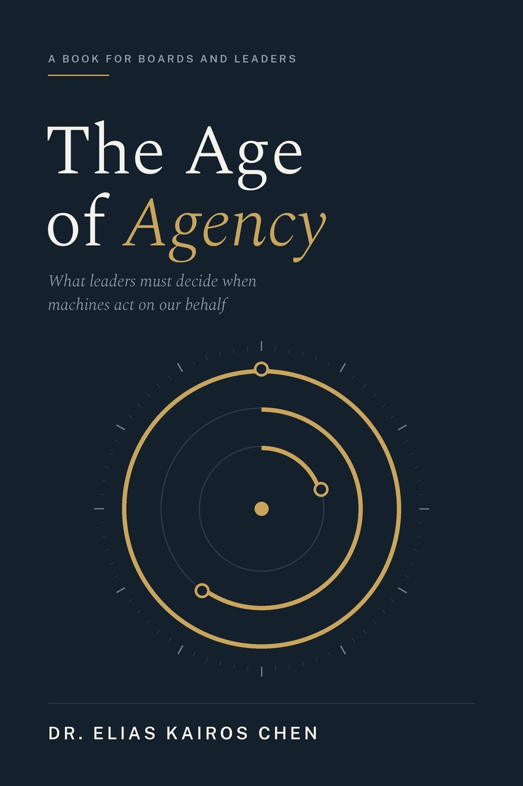

The Age of Agency
What leaders must decide when machines act on our behalf.

The Age of Agency
What leaders must decide when machines act on our behalf
By Dr. Elias Kairos Chen
A practical book for boards and leaders on the shift from AI that answers to AI that acts: which decisions to delegate, how work and value move, how to make every agent earn its place in the accounts, and how to stay accountable when machines decide.
- Intended readers
- Board directors, executives, investors and policymakers, and general readers interested in the future of intelligence
- Status
- In preparation
- Updates
- Announced first to newsletter subscribers
Six parts
Open each part to read its introduction.
IFrom tools to agentsWhat has actually changed
For most of computing's history, software has waited for instructions. Even the most sophisticated systems answered questions, produced forecasts or flagged exceptions, and a person decided what to do next. That boundary is now moving. The newest systems take a goal, break it into steps, use other software and act, often across many tasks before a person sees the result.
Part I sets out what is genuinely new about this shift and what is merely relabelled. It introduces a simple spectrum of autonomy, from assistance through automation to agency, and shows why the step from recommending to acting changes the economics, the risks and the management of AI. It also separates three strands that are often blurred: digital agents that work in software, physical systems that act in the world, and the convergence of the two.
The aim is a shared vocabulary for boards and executives, so that the decisions which follow are made on what the technology does, not on what it is called.
IIThe delegation mapWhat machines may do, recommend, or never touch
Every organisation already delegates. Boards delegate to management, managers to teams, and teams to procedures and systems. What changes in the Age of Agency is the arrival of a new kind of delegate: fast, tireless, increasingly capable, and not accountable in any way a court or regulator recognises.
Part II introduces the delegation map, the book's central tool. It sorts decisions into three rings: those a machine may make and carry out, those it may only recommend, and a narrow core that stays with people because of its consequence, its irreversibility or its need for legitimacy. The part shows how to place a decision on the map, why the right answer differs by industry and changes over time, and how organisations that draw these lines deliberately avoid both reckless automation and the quieter cost of standing still.
The map is a living document. As systems earn trust, decisions move outward; when they fail, decisions move back in.
IIIAgentrificationWhere work and value move
When agents take on tasks, work does not simply disappear; it is rearranged. Part III introduces agentrification: the process by which machines take over activity inside a role, a firm or an industry, and the shifts in value that follow.
Some roles narrow to supervision and exception handling. Others expand, as one person directs work once done by a team. Entry-level positions, where people have traditionally learned their trade, are among the most exposed, which raises a hard question about how future leaders will be developed. The same forces act on markets: margins move toward those who own the data, the customer relationship or the trusted brand, and away from those whose advantage was the cost of skilled labour.
This part gives leaders a way to trace where value is moving in their own sector, which capabilities to build or protect, and how to manage the human transition with candour rather than euphemism.
IVThe value ledgerMaking every agent earn its place
Most organisations judge AI by what it can do. Boards will judge it by what it does to the accounts. Part IV turns the ideas of the earlier parts into a discipline for investment. It starts where leaders already start, with the financial statements, and asks which lines an agent can move: revenue, the cost base, the capital tied up in the business, and the losses and compliance costs that come with risk.
It introduces the agent value ledger, a simple record that gives every agent a baseline, an expected effect, a full cost and a named owner, and that says in advance when the agent will be switched off. It explains why freed-up time is not a saving until it is put to use, why the cost of supervising and assuring an agent belongs on the ledger, and why benefits from lower risk should wait for evidence. Worked examples from banking, healthcare, energy and manufacturing show how the same method reads in each industry.
The aim is to replace the question "Are we using enough AI?" with a better one: "Is each agent earning its place?"
VAccountabilityGoverning and assuring delegated decisions
Delegating a decision does not delegate responsibility for it. When an agent approves a claim, prices a contract or acts on a customer's behalf, the organisation still answers for the outcome to regulators, courts, customers and its own board.
Part V addresses how to govern decisions that people no longer make directly. It covers what good oversight looks like when systems act faster than humans can review them; how to set limits, monitor behaviour and intervene; and why every agent needs a clear identity and an owner who answers for it. Drawing on the discipline of financial audit, it argues that AI will need its own assurance: independent evidence, not vendor promises, that systems behave as intended.
It also maps the direction of regulation and standards, so that leaders can build the controls and records that assurers and regulators will expect, rather than retrofitting them after an incident.
VIUniversal Basic IntelligenceWho gets access, on what terms
The final part widens the lens from the organisation to society. If capable intelligence becomes a basic input to work, learning and public services, then access to it begins to resemble access to electricity, literacy or the internet: a condition for taking part.
Part VI introduces Universal Basic Intelligence, the idea that capable AI should be treated as essential infrastructure, and asks what follows. Who provides it, and on whose terms? What happens to small firms, smaller economies and individuals if the most capable systems are concentrated in a few hands? How should education prepare people to work alongside agents? The part sets out the choices facing governments and the role business can play.
It closes with the question that runs through the whole book. The Age of Agency is not something that happens to us; its shape depends on decisions leaders make now.